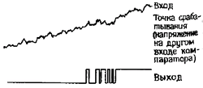
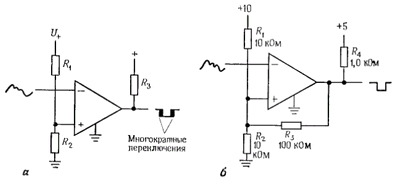
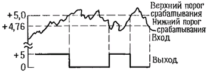
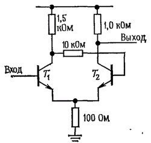

Простейшая схема компаратора, представленная выше, имеет два недостатка. При медленно изменяющемся входном сигнале напряжение на выходе также может изменяться достаточно медленно. Более того, если во входном сигнале присутствует шум, то на выходе может происходить дребезг в те моменты, когда напряжение на входе проходит через точку переключения:

Оба недостатка позволяет устранить положительная обратная связь:

Резистор R3 создает в схеме два порога срабатывания в зависимости от состояния выхода. Для приведенного примера нижний порог срабатывания определяется уровнем 4,76 В при условии, что напряжение на выходе равно потенциалу земли (высокий уровень на входе); когда напряжение на выходе равно + 5 В, то порог определяется уровнем 5,0 В. Вероятность того, что шумовой сигнал на входе вызовет многократные переключения выхода, в данном случае меньше:

Кроме того, положительная обратная связь обеспечивает быстрое переключение выхода независимо от скорости изменения входного колебания. (Для того чтобы еще больше увеличить скорость переключения, к резистору R3 часто подключают небольшой ускоряющий конденсатор емкостью 10 - 100 пФ.) Эта схема и называется триггером Шмитта. (При использовании операционного усилителя «притягивающий» резистор был бы не нужен.) Состояние выхода зависит как от входного напряжения, так и от недавней предыстории - это так называемый эффект гистерезиса.
Для тригеров Шмитта с небольшим гистерезисом процедура разработки проста. Воспользуемся схемой 3 (б), показанной ранее.
Сначала выберем резистивный делитель (R1R2), чтобы приблизительно установить правильное пороговое напряжение; если вы хотите, чтобы пороговое напряжение было близко к потенциалу земли, нужно воспользоваться одним резистором, который включен между не инвертирующим входом и землей. Далее, выберем резистор (положительной) обратной связи R3, который обеспечит требуемый гистерезис. Напомним, что гистерезис равен выходному размаху, ослабленному резистивным делителем, образованным резисторами R3 и R1||R2.
И наконец, выберем выходной «притягивающий» резистор R4, достаточно небольшой величины для обеспечения полного размаха в пределах питающего напряжения, принимая во внимание нагружающий эффект резистора R3. Если вы хотите, чтобы пороговые напряжения были симметричны относительно потенциала земли, включите между не инвертирующим входом и источником отрицательного напряжения питания резистор смещения соответствующей величины. Резисторы можно подобрать так, чтобы выходной ток и импеданс находились в пределах требуемого диапазона.
Дискретная транзисторная схема триггера Шмитта. Для построения схемы триггера Шмитта можно также использовать обычные транзисторы (рис. 4.65). Транзисторы Т1 и Т2 имеют общий эмиттерный резистор. Важно, чтобы коллекторный резистор транзистора Т1 был больше, чем коллекторный резистор Т2. При выполнении этого условия пороговый уровень включения транзистора Т1, который превышает напряжение на эмиттере на величину падения напряжения на диоде, уменьшается при включении транзистора Т1, так как эмиттерный ток больше, если проводит транзистор Т2. Здесь, как и в рассмотренной выше интегральной схеме триггера Шмитта, наблюдается эффект гистерезиса для порогового напряжения триггера.

Пример триггера (6) в однйо микросхеме: 74HC14N